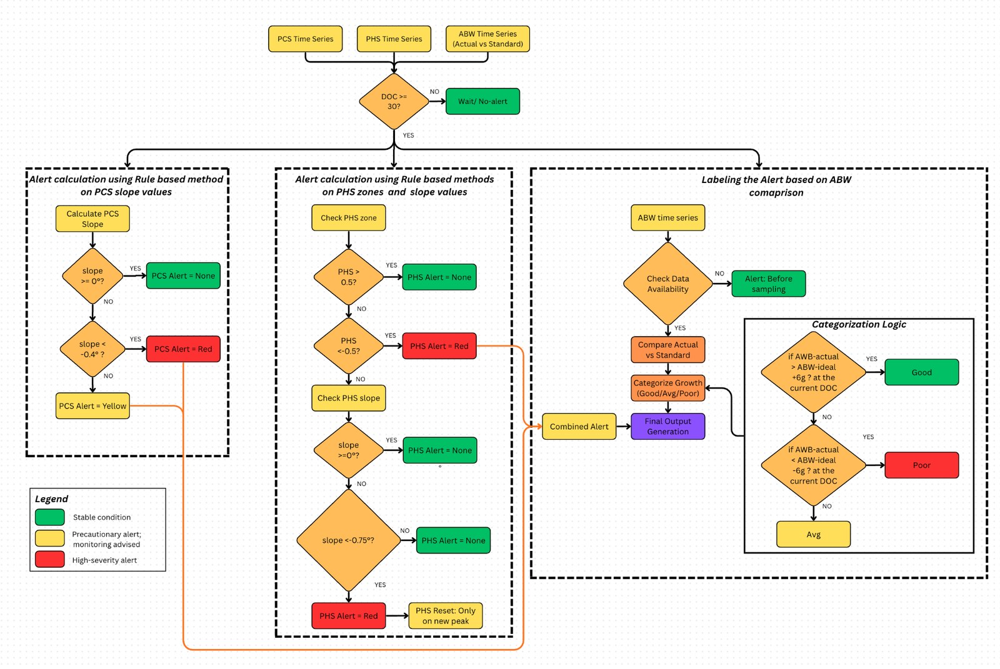

Decision system · early warning
SIRAS / EWIS
Shrimp Index Risk Alert System — an early warning and information system that flags trouble in a pond while there is still time to act on it.
- Role
- In-situ correlation
& alert system design - Inputs
- Sentinel-2 spectral trends
+ in-situ ABW samples - Method
- Rule-based classification
on rate of change - Output
- PCS / PHS scores
& combined alert label - Result
- 80% overall accuracy
across multiple regions
The problem
Shrimp farming is vulnerable to disease, poor water quality and environmental change, any of which can cause significant production loss. Most farmers identify these problems only once they are already severe, which sharply limits what corrective action can still do.
An early warning and information system detects risk at an early stage and issues a timely alert — enabling proactive measures, reducing losses, and improving overall farm productivity.
My role
Collecting and correlating in-situ data from shrimp culture farms with the patterns observed in spectral signatures, and developing the risk alert system that turns that correlation into an action a farmer can take.
Objectives
- Use alerts observed within ponds together with remotely sensed data to develop a rule-based alert system.
- Generate early risk alerts for disease outbreaks, water quality deterioration and abnormal growth conditions — enabling timely intervention and more sustainable shrimp farming.

How it works
The system takes the temporal pattern of each pond's spectral signature and computes its rate of change over time, using that to classify ponds into health states. It then compares average body weight (ABW) sampled on site against the standard ABW for that day of culture, and uses the gap to set the alert label.

What I built
- A correlation study linking in-situ farm observations to the spectral behaviour of the same ponds over the culture cycle.
- A rule set that classifies pond state from the rate of change of the spectral signature, rather than from any single observation.
- A growth check that compares sampled ABW against the standard ABW curve for the pond's day of culture.
- Two separate scores — pond culture state (PCS) and pond health state (PHS) — plus a combined alert label, so a farm manager can see which of the two is driving the warning.
- A FastAPI service over the alert engine, returning JSON alerts with the metadata needed to act on them.
API contract
| Request | Type |
|---|---|
| pondid | str |
| stocking_date | str |
| harvest_date | str, optional |
| Response | Meaning |
|---|---|
| time | Timestamp of the assessment. |
| pondid / pond | Pond identifier. |
| PCS | Pond culture state score. |
| PHS | Pond health state score. |
| Alert_PCS | Alert raised on culture state. |
| Alert_PHS | Alert raised on health state. |
| Alert_Combined | Combined signal across both. |
| Alert_Label | Final label surfaced to the farm. |
| DOC | Day of culture. |
| STD_abw | Standard average body weight for that DOC. |
| Sampling_abw | Average body weight measured on site. |
Request sequence
Results
- The proposed rule-based method achieved 80% overall accuracy across multiple regions.
- Risk is surfaced from the trajectory of the spectral signature, so an alert can arrive before the problem is visible at the pond.
The index this system watches is documented in Shrimp Index (SI), and the pond geometries it runs over come from Aqua-Boundary.